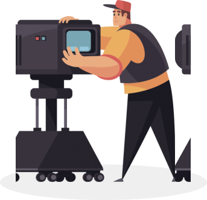

Sometimes movies are more complicated than four-volume novels. But you learn to read books in school, but
you
don't learn to watch movies. And without preparation, it can be difficult to enjoy watching a movie.
In this 8-session course we will learn how to be conscious viewers. We will get acquainted with the stages
of
film production and learn how to watch a movie through the eyes of a screenwriter, director and editor. We
will
understand genres and look at the most important films, from Citizen Kane to The Matrix.
